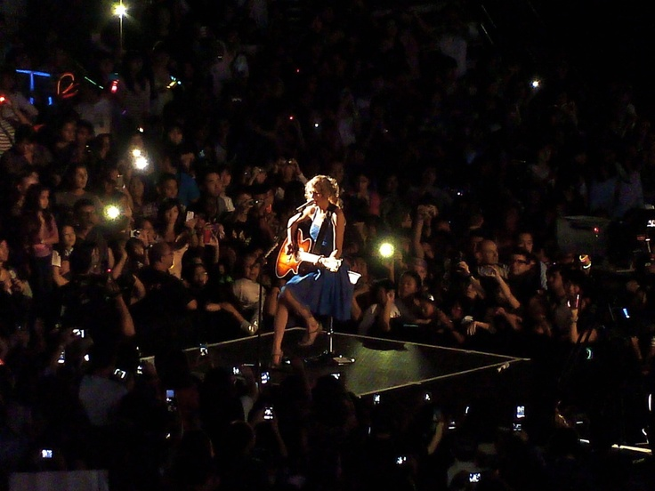
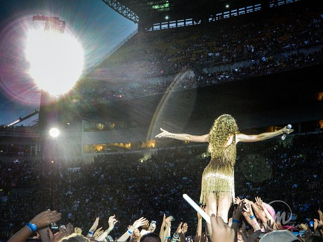
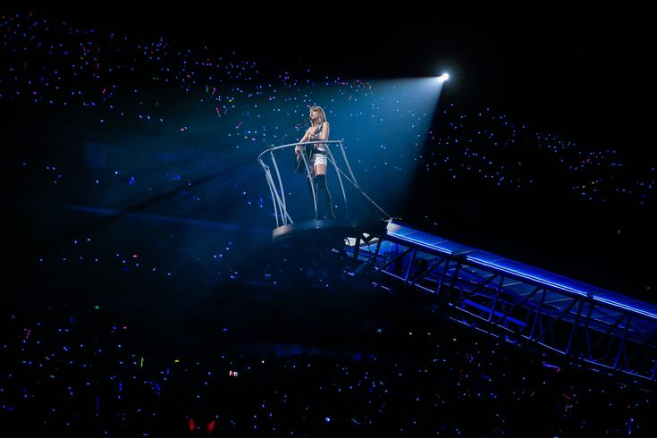
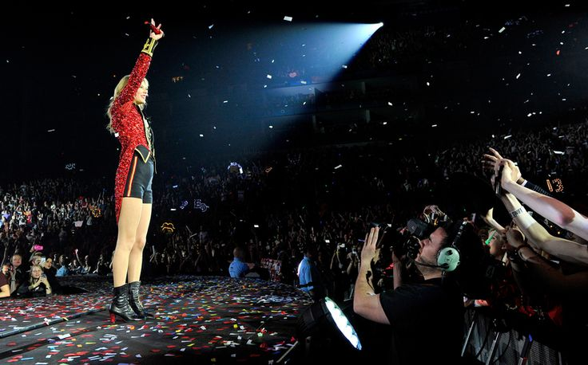
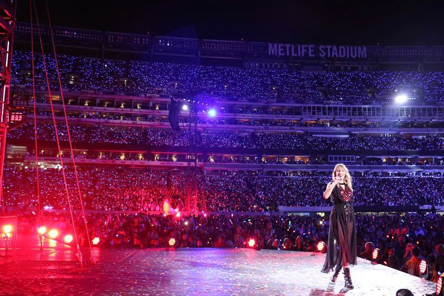

Giras de Taylor Swift
Fearless Tour (2009–2010)
Taylor Swift ha realizado cinco giras principales antes de The Eras Tour, cada una ligada al lanzamiento de sus álbumes más importantes. Su primera gira fue la Fearless Tour, que se llevó a cabo entre 2009 y 2010 en apoyo de su álbum Fearless. Comenzó el 23 de abril de 2009 en Evansville, Indiana, y finalizó el 10 de julio de 2010 en Cavendish, Canadá. La gira incluyó 118 shows, con una asistencia total de aproximadamente 1,2 millones de personas y una recaudación de 66,5 millones de dólares en los 99 shows reportados. Esta fue la primera vez que Taylor lideró su propia gira, incluyendo canciones del álbum Fearless y algunos covers.
Speak Now World Tour (2011–2012)
Luego vino la Speak Now World Tour, entre 2011 y 2012, para promocionar su álbum Speak Now. Esta gira internacional comenzó el 9 de febrero de 2011 en Singapur y concluyó el 18 de marzo de 2012 en Auckland, Nueva Zelanda. Se realizaron alrededor de 110 shows, con una asistencia aproximada de 1,64 millones de personas y una recaudación de 123,7 millones de dólares. La gira se destacó por su puesta en escena teatral, escenarios móviles y un repertorio que incluía tanto canciones del álbum Speak Now como de sus trabajos anteriores.
The Red Tour (2013–2014)
La tercera gira fue The Red Tour, entre 2013 y 2014, en apoyo del álbum Red. Comenzó el 13 de marzo de 2013 en Omaha, Nebraska, y finalizó el 12 de junio de 2014 en Singapur. En total, se realizaron 86 shows, con una asistencia de aproximadamente 1,7 millones de personas y una recaudación de 150,2 millones de dólares. La gira destacó por su producción elaborada y vestuarios temáticos, ofreciendo un espectáculo variado que combinaba canciones de Red con éxitos de sus discos anteriores.
The 1989 World Tour (2015)
En 2015, Taylor realizó The 1989 World Tour para promocionar su álbum 1989. La gira comenzó el 5 de mayo en Tokio, Japón, y finalizó el 12 de diciembre en Melbourne, Australia. Fueron 85 shows, con una asistencia total de unos 2,28 millones de personas y una recaudación de 250,7 millones de dólares. Esta gira en estadios se caracterizó por su impresionante producción escénica, iluminación, efectos visuales y la particularidad de invitar a un artista sorpresa en cada concierto.
Reputation Stadium Tour (2018)
Finalmente, en 2018 llevó a cabo el Reputation Stadium Tour, asociado al álbum Reputation. Comenzó el 8 de mayo en Glendale, Arizona, y concluyó el 21 de noviembre en Tokio, Japón. Esta fue su gira más taquillera hasta ese momento, con 53 shows, una asistencia de 2,88 millones de personas y una recaudación de 345,6 millones de dólares. La gira se realizó completamente en estadios, con pirotecnia, efectos especiales y una gran producción visual que convirtió cada concierto en un espectáculo memorable.
